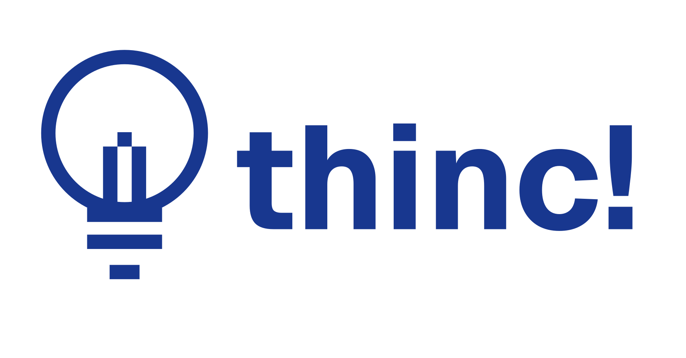
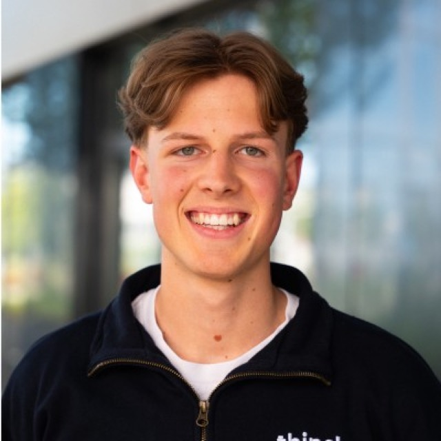
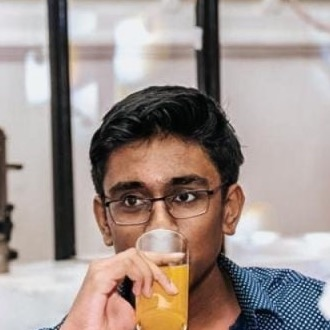
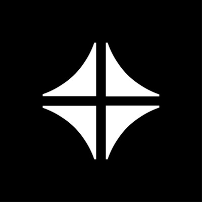
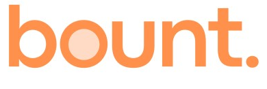
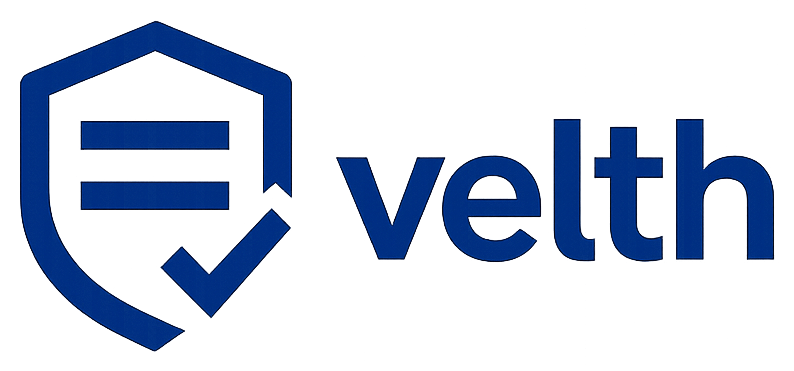

Claims handling is slow, manual and expensive. And every rule change makes it riskier.
People wait longer for their money, and errors creep in, because almost every claim still passes through a human first. When policy changes, nobody can see in advance which decisions flip.
All four deliverables, built and tested.
Intake and decision
One of three next steps, with rule, facts and policy version.
Review and change control
Reviewer overrides with reason. Policy owner sees what a change touches.
Quality measurement
Before and after per policy version. Wrong routine decisions shown first.
Business case
Annual cost, error cost and cost of a policy change, with assumptions.
Three outcomes, one next step.
Human review
A known review trigger fires.
A person checks the evidence, decides and records why.
Rule, facts and policy version in one view. One-step override, logged with reviewer.
Missing information
A deciding fact is missing, unreadable or conflicting.
Ask the claimant for exactly the missing item.
Names the document to request. A blank stays blank, never guessed.
Routine processing
Every deciding fact is known and in range, no trigger.
A handler confirms. Routine is not a payment approval.
Routine opens only after sampled audits pass. Any error closes it again.
What turns a prototype into a product.
Replay before release
See which open claims flip before a rule goes live. Closed claims never move.
Voice agent
Navigates the entire platform by voice.
Four-eyes release
The person who proposes a policy change cannot approve it.
Documents propose
Extracted facts are suggestions. The written policy decides.
Rules decide. AI only proposes.
Read facts
Documents and claim forms are turned into facts. Blank stays blank.
Apply policy
Written policy, stored as versioned data. First matching rule wins.
Check
A guard can send a claim to a person. It can never clear one.
Explain
Rule, facts and policy version, on every recommendation.
Remember
Overrides and releases go into a log nobody can quietly rewrite.
[Headline with the market size, from research]
A policy change costs 6 times less.
Thank you. Meet the team.




- Contract Developer, Contra
- Full Stack Developer, bount.
- Reading School


- TUM.ai × Anthropic, Max Planck Challenge winner
- 8x hackathon winner
- Co-founder, velth

A wrong routine decision costs about 240 times a needless escalation.
Above this chance of being wrong, a person is cheaper than routine. So a claim reaches routine only when every deciding fact is known and in range.
If more routine decisions than this are wrong, the year-1 net benefit is gone. The case rests on a very low wrong-routine rate, not on speed.
Every input is labelled, and editable.
| Input | Value | Status |
|---|---|---|
| Claims per year | 20,000 | ASSUMED |
| Manual triage time | 12 min per claim | ASSUMED |
| Handler cost | EUR 45 per hour, fully loaded | ASSUMED |
| System running cost | EUR 60,000 per year | ASSUMED |
| Flip share at v2 | 15.8% | MEASURED-PROXY |
Full register: BUSINESS_CASE.md and assumptions.json in the repository.